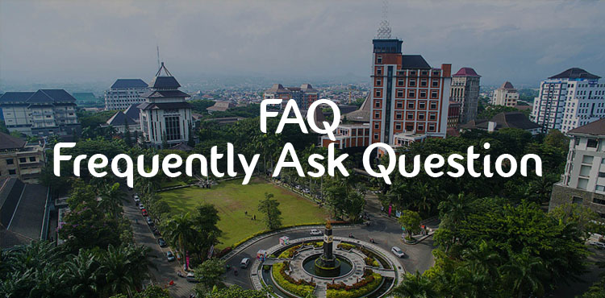

BIT PKKMB VOKASI
FREQUENTLY ASK QUESTION
Pengenalan Kehidupan Kampus Mahasiswa Baru Universitas Brawijaya adalah kegiatan penyambutan Mahasiswa Baru sebagai bentuk kegiatan yang bertujuan untuk membentuk rasa kebanggaan dan mengenal lebih dalam akan kehidupan kampus baik dari proses belajar mengajar, lingkungan kampus maupun unit kegiatan mahasiswa.
Pelaksanaaan PKKMB Vokasi UB sendiri dilaksanakan pada tanggal 21-22 September 2020.
Pelaksanaan PKKMB Vokasi UB 2020, dilaksankan secara daring.
Pra Yuwaraja adalah Salah satu rangkaian Ospek fakultas pendidikan Vokasi yang mana didalam rangkaian ini terdapat Konsultasi Mahasiswa Baru kepada panitia mengenai rangkaian, pelaksanaan, dan hal apapun yang berkaitan dengan PKKMB Vokasi. Salah satu tujuan utamanya adalah memperkenalkan & mempererat rekan hubungan antar mahasiswa baru dan juga Panitia pelaksana.
Semua informasi mengenai PKKMB Vokasi UB 2020 berupa peraturan, penugasan, atribut dll dapat diakses di :
- Website yuwaraja.vokasi.ub.ac.id
- Official account line http://line.me/ti/p/~@vgh3838g
- Instagram @pkkmb_vokasiub
Diwajibkan untuk seluruh mahasiswa baru Vokasi UB 2020 untuk mengikuti semua rangkaian acara PKKMB Vokasi UB 2020
Krima (Krida Mahasiswa) merupakan rangkaian acara dari PKKMB Vokasi yang dilaksanakan kurang lebih selama satu semester dan wajib diikuti oleh mahasiswa baru Vokasi UB 2020. Informasi mengenai Krima Vokasi UB dapat diakses di official account PKKMB Vokasi UB 2020.
Mahasiswa baru yang tidak lulus dalam rangkaian acara PKKMB Vokasi tidak akan mendapatkan sertifikat yang nantinya akan berguna untuk pendaftaran Tugas Akhir.
Cluster adalah sistem pembagian kelompok untuk memudahkan komunikasi antara pendamping dan mahasiswa baru.
Hal yang perlu di persiapkan dalam PKKMB YUWARAJA XII :
- Mentaati seluruh peraturan dan tata tertib rangkaian PKKMB
- Menggunakan Atribut mahasiswa baru sesuai arahan Panitia
- Laptop / HP yang bisa meng akses ZOOM
- Kuota yang di persiapkan sekitar 20GB
- Tempat yang cukup cahaya